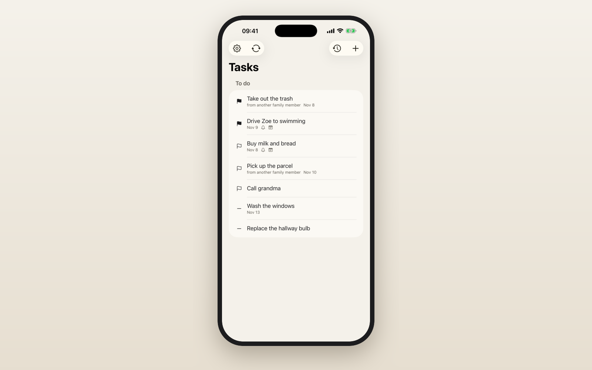
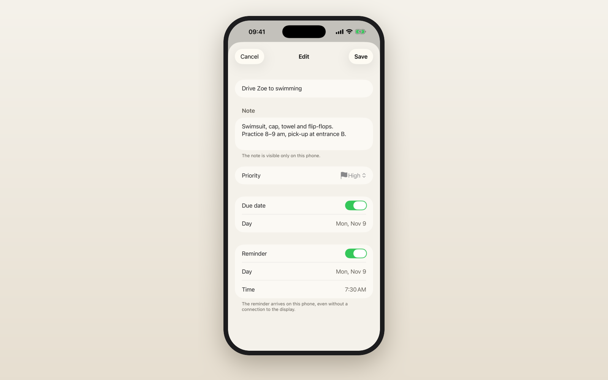
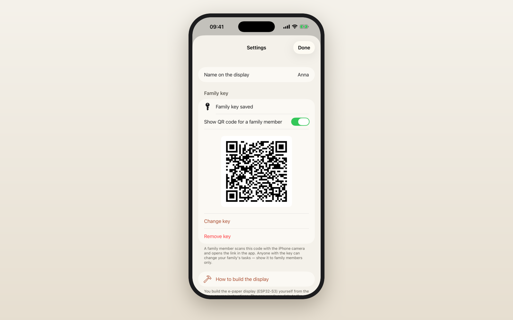

How to publish:
1. LinkedIn → Write article → upload 00_cover.png as the cover.
2. Copy the title below into the Title field.
3. Select the text from "Why" down to the hashtags, copy it and paste it into the article body.
4. Replace each orange image box with the named image (＋ icon → Image).
5. Replace <APP_STORE_LINK> with the App Store link.
04_display.png exists only after you add ../photos/display.jpg and run ../make_graphics.sh; otherwise delete that box.
Family To-Do for E-Paper: one task list for the whole family, on a display in the hallway
Why
Household tasks usually live in a family chat, on a sticky note or in someone's head. I wanted a list that is simply there: visible to everyone on the way out of the house, without unlocking a phone, without notifications and without another glowing screen.
So I built a small e-paper display that hangs in the hallway and shows the family's tasks, and an iPhone app that feeds it.
How it works
- Everyone at home adds tasks on their own iPhone: title, priority, due date, reminder.
- When the app is open near the display, it syncs over Bluetooth Low Energy. No pairing, no Wi-Fi, no cloud.
- The display merges changes from all phones and decides on its own what to show: up to 9 tasks, sorted by priority and due date, and every person with an open task gets at least one row.
- E-paper keeps the image without power, so the list is readable at a glance like a printed note.
📷 IMAGE: 01_list.png

The app
- Add, edit, complete and delete tasks in seconds
- Three priorities, shown with the same flag icons on the phone and on the display
- Due dates, and reminders that arrive on your phone even away from home
- History of completed tasks with the time they were done
- Private notes for the details (a shopping list, an address, a door code). They stay on your phone and are never sent to the display.
- English and Polish
📷 IMAGE: 02_editor.png

Private by design
- No account, no server, no analytics. Tasks stay on your phones and on your display.
- Access is protected by a family key that you generate yourself (HMAC-SHA256 with a fresh nonce for every connection).
- The key is added by scanning a QR code with the iPhone camera, and a family member can show it as a QR code in Settings. It is kept in the Keychain.
- Without a key the app still works as a task list with reminders on your phone.
📷 IMAGE: 03_settings.png

The hardware
- Seeed Studio XIAO ESP32-S3 with an external 2.4 GHz antenna
- 4.2" black-and-white e-paper panel (400×300 px) with the Seeed ePaper driver board for XIAO
- 3D-printed case and stand (STL and G-code in the repository)
- Powered over USB-C, no battery
📷 IMAGE: 04_display.png (photo of the real display)

Under the hood
For the engineers reading this:
- Firmware: C++17 on PlatformIO. The logic (task store, last-writer-wins merge with tombstones, choosing what fits on the screen, HMAC, the BLE protocol) is a plain library tested on the Mac: 88 unit tests.
- iOS: SwiftUI with a separate Swift package for the logic (sync engine, repository, protocol, reminders): 139 tests. The phone and the firmware share the same JSON test vectors, so both sides agree on the format byte for byte.
- Sync: each change on the display increments a revision; a phone sends its own changes and fetches only what changed since its last cursor. A dropped connection can simply be retried without creating duplicates.
- App Store screenshots are generated automatically from demo data in two languages.
Open source
Firmware, iOS app, wiring and the 3D-printable case are on GitHub, with a guide for building your own:
https://github.com/marekpiotrowskimp/family-todo-epaper
The app is free on the App Store for iPhone (iOS 17 or later):
<APP_STORE_LINK>
#iOS #ESP32 #EPaper #OpenSource #SwiftUI #EmbeddedSystems #MakerProjects